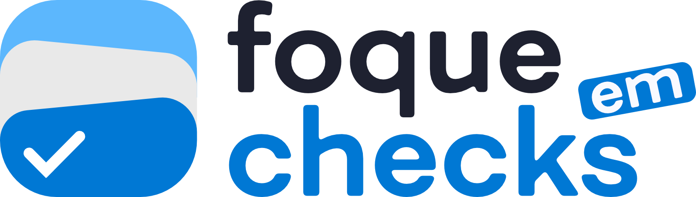
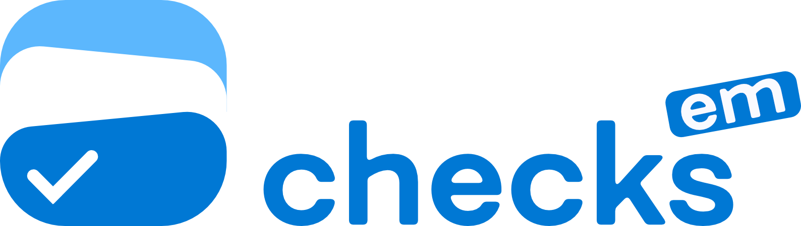

Adicione suas tarefas (uma por linha) e concentre-se em uma de cada vez, sem distrações.
Extrair de imagem
Cole ou carregue sua captura de tela. O texto será inserido direto na caixa acima.
Você concluiu todas as tarefas!